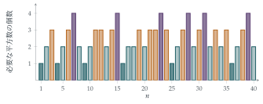

STEP III 1994、第8問
先に進む前に問題を読んでおこう。問題は STEP Support Programme の問題データベースにある： step.maths.org/questions/94-s3-q8
導入
\(7\) は2つの平方数の和（sum of squares）としても、3つの平方数の和としても表せない。しかし4つの平方数の和としては表せる：\(7 = 4 + 1 + 1 + 1\)。1770年、ジョゼフ＝ルイ・ラグランジュ（Joseph-Louis Lagrange）は、すべての正の整数が4つの平方数の和として表せることを証明した（\(0^2\) も許す）。この定理は1621年にバシェ（Bachet）によって予想され、フェルマー（Fermat）も主張していたが、彼はいつものように証明を残さなかった。オイラー（Euler）は40年にわたってこの問題に取り組んだが、完全には解決できなかった。
1748年にオイラーが発見した鍵となる道具が、この問題の中にある。それは、4つの平方数の和どうしの積は、それ自身もまた4つの平方数の和になるという事実である。これにより、ラグランジュの定理は素数（prime）についてだけ証明すればよく、残りは掛け合わせることで従う。この問題では、複素行列の行列式（determinant）からわずか数行でこの恒等式（identity）を導く。これらの行列は、実は第 6.7 節の四元数（quaternions）が姿を変えたものである。
取りかかる前に
2つの平方数の場合を思い出そう。複素数（complex number）\(z = a + b\mathrm{i}\), \(w = p + q\mathrm{i}\) に対して \(|z|^2|w|^2 = |zw|^2\) が成り立つので、\((a^2 + b^2)(p^2 + q^2)\) は2つの平方数の和になる。行列を使って、これを4つの平方数に拡張するにはどうすればよいだろうか？
考え方は、4つの実数からつくられる一種の「数」で、その「大きさの2乗」が \(a^2 + b^2 + c^2 + d^2\) であり、しかも乗法的（multiplicative）であるようなものを見つけることである。行列は行列式に関して乗法的である：\(\det(\mathbf{AB}) = \det\mathbf{A}\det\mathbf{B}\)。そこで、\(a, b, c, d\) からつくられ、行列式が \(a^2 + b^2 + c^2 + d^2\) となり、さらにそのような行列どうしの積が再び同じ形になるような行列がほしい。
順を追って解く
段階 1 行列式は4つの平方数の和である
\(\begin{pmatrix} z_1 & z_2 \\ -z_2^* & z_1^* \end{pmatrix}\) の行列式は何か？ \(z_1 = a + b\mathrm{i}\), \(z_2 = c + d\mathrm{i}\) とすると、それは \(a, b, c, d\) を用いてどう表されるか？
\(\det = z_1z_1^* + z_2z_2^* = |z_1|^2 + |z_2|^2 = a^2 + b^2 + c^2 + d^2\) である。同様に、\(z_3 = p + q\mathrm{i}\), \(z_4 = r + s\mathrm{i}\) とすると、2つ目の行列の行列式は \(p^2 + q^2 + r^2 + s^2\) である。
段階 2 積も同じ形をもつ
掛け合わせると、 \[\begin{pmatrix} z_1 & z_2 \\ -z_2^* & z_1^* \end{pmatrix}\begin{pmatrix} z_3 & z_4 \\ -z_4^* & z_3^* \end{pmatrix} = \begin{pmatrix} z_1z_3 - z_2z_4^* & z_1z_4 + z_2z_3^* \\ -z_2^*z_3 - z_1^*z_4^* & -z_2^*z_4 + z_1^*z_3^* \end{pmatrix}.\] \(w_1 = z_1z_3 - z_2z_4^*\), \(w_2 = z_1z_4 + z_2z_3^*\) とおくと、下の行は \((-w_2^*, w_1^*)\) となるので、積は \(\begin{pmatrix} w_1 & w_2 \\ -w_2^* & w_1^* \end{pmatrix}\) であり、同じ形をしている。その行列式は \(|w_1|^2 + |w_2|^2\) であり、行列式は積を保つから、 \[(a^2 + b^2 + c^2 + d^2)(p^2 + q^2 + r^2 + s^2) = |w_1|^2 + |w_2|^2.\]
段階 3 4つの平方数を読み取る
\(w_1 = (a + b\mathrm{i})(p + q\mathrm{i}) - (c + d\mathrm{i})(r - s\mathrm{i})\) と \(w_2 = (a + b\mathrm{i})(r + s\mathrm{i}) + (c + d\mathrm{i})(p - q\mathrm{i})\) を展開し、実部と虚部に分けよ。
\[w_1 = (ap - bq - cr - ds) + \mathrm{i}(aq + bp + cs - dr),\] \[w_2 = (ar - bs + cp + dq) + \mathrm{i}(as + br - cq + dp).\] よって \[\begin{aligned} L_1 &= ap - bq - cr - ds, & L_2 &= aq + bp + cs - dr, \\ L_3 &= ar - bs + cp + dq, & L_4 &= as + br - cq + dp, \end{aligned}\] とおけば、いずれも \(a, b, c, d\) についても \(p, q, r, s\) についても1次式であり、\((a^2 + b^2 + c^2 + d^2)(p^2 + q^2 + r^2 + s^2) = L_1^2 + L_2^2 + L_3^2 + L_4^2\) が成り立つ。■
たとえば、\(7 = 2^2 + 1^2 + 1^2 + 1^2\), \(3 = 1^2 + 1^2 + 1^2 + 0^2\) である。\((a, b, c, d) = (2, 1, 1, 1)\), \((p, q, r, s) = (1, 1, 1, 0)\) とすると、上の式から \((L_1, L_2, L_3, L_4) = (0, 2, 4, 1)\) が得られ、実際 \(0^2 + 2^2 + 4^2 + 1^2 = 21 = 7 \times 3\) となっている。
振り返り
乗法性が仕事をする。この恒等式は \(\det(\mathbf{AB}) = \det\mathbf{A}\det\mathbf{B}\) から得られた。これは、2つの平方数の恒等式が \(|zw| = |z||w|\) から得られるのとまったく同じである。
積について閉じていること。特別な形 \(\begin{pmatrix} z_1 & z_2 \\ -z_2^* & z_1^* \end{pmatrix}\) は積によって保たれる。このおかげで、結果が再び4つの平方数の和になるのである。
丁寧な計算の管理が大切である。最後の段階は機械的だが間違えやすい。符号と共役（conjugate）は注意深く扱わなければならない。
背後にある数学
ラグランジュの証明の概略は次のとおりである。オイラーの恒等式により、すべての素数 \(p\) が4つの平方数の和であることを示せば十分である。数え上げの議論により、\(m < p\) を満たすある倍数 \(mp\) が4つの平方数の和であることがわかる。次に巧妙な「降下法（descent）」によって、\(1 < m < p\) で \(mp\) が4つの平方数の和ならば、より小さいある \(m'\) についても \(m'p\) が4つの平方数の和であることが示される。これを繰り返せば \(m = 1\) に到達する（第 1.5 節のフェルマーの降下法と比べてみよ）。1834年、ヤコビ（Jacobi）はさらに先へ進み、\(n\) を4つの平方数の和として表す方法の正確な個数を求めた。それは、\(n\) の約数（divisor）のうち \(4\) の倍数でないものの和の \(8\) 倍である。たとえば、\(1\) の表し方は \(8\) 通りある（4つの位置のどれかに \(\pm1\) を置く）。

2つ、3つ、4つ
次元ごとの様子は微妙である。2つの平方数の和は複素数から生じ、ある数が2つの平方数の和となるのは、\(4k + 3\) の形の素因数がすべて偶数乗で現れるときであり、かつそのときに限る（第 1.6 節）。4つの平方数の和は四元数から生じ、すべての数がそう表せる。ところが3つの平方数の和には積の恒等式がまったくない（乗法的な大きさをもつ3次元の数の体系は存在しない。ハミルトン（Hamilton）が3つ組で失敗したのはそのためである。第 6.7 節を参照）。そして定理もより難しい。ルジャンドルとガウスは、\(n = 4^k(8m + 7)\) でない限り \(n\) は3つの平方数の和であることを示した（図 7.8.1）。4より先では、8次元の八元数（octonions）が8つの平方数の恒等式を与える。これは Degen と Graves によって発見された。そしてフルヴィッツ（Hurwitz）は1898年に、この種の恒等式が存在するのは \(1\), \(2\), \(4\), \(8\) 個の平方数の場合に限ることを証明した。
ウェアリングの問題
ラグランジュの定理は、1770年にエドワード・ウェアリング（Edward Waring）が提起した問題の最初の場合である。その問題とは、各 \(k\) に対して、すべての正の整数が高々 \(g(k)\) 個の \(k\) 乗数の和として表せるような数 \(g(k)\) が存在するか、というものである。ダフィット・ヒルベルト（David Hilbert）は1909年に、そのような数が存在することを証明した。現在では \(g(2) = 4\), \(g(3) = 9\)（たとえば \(23 = 2 \cdot 2^3 + 7 \cdot 1^3\) には9個の立方数が必要である）、\(g(4) = 19\) であることがわかっている。
思考のスキル
ある性質が積によって保たれることを示すには、その性質が対象の「大きさ」になっていて、しかも大きさが乗法的であるような代数的構造（複素数、四元数、行列）を見つけよ。
そのような構造が見つかれば、積の恒等式はおのずと得られ、すべての数についての問題は素数についての問題に帰着される。
次の一歩
具体例。\((a, b, c, d) = (p, q, r, s) = (2, 1, 1, 1)\) として \(L_1, \ldots, L_4\) の式を用い、\(49 = 7 \times 7\) を4つの平方数の和として表し、答えを確かめよ。それは自明な \(49 = 7^2 + 0^2 + 0^2 + 0^2\) と同じだろうか？
4つの中の2つ。\(c = d = r = s = 0\) のとき、この恒等式が第 1.6 節の2つの平方数の恒等式に帰着することを示せ。
4つの平方数が必要な数。平方数を \(8\) を法として（modulo）考えることにより、\(8m + 7\) の形の数は3つの平方数の和として表せないことを示せ。
ヤコビの公式。\(2\) を4つの平方数の和として表す方法（順序と符号を区別する）を数え上げ、その答えが \(8 \times (1 + 2) = 24\) であることを確かめよ。
さらに学ぶために
Harold Davenport, The Higher Arithmetic（Cambridge University Press）。第 V 章でラグランジュの四平方定理を証明している。
John Conway & Derek Smith, On Quaternions and Octonions（A. K. Peters）。四元数の算術を扱い、四元数の整数を用いた四平方定理の証明も含む。
Aigner & Ziegler, Proofs from THE BOOK、「Representing numbers as sums of two squares」の章（数を2つの平方数の和として表す）。本節と対をなす、2つの平方数の話である。